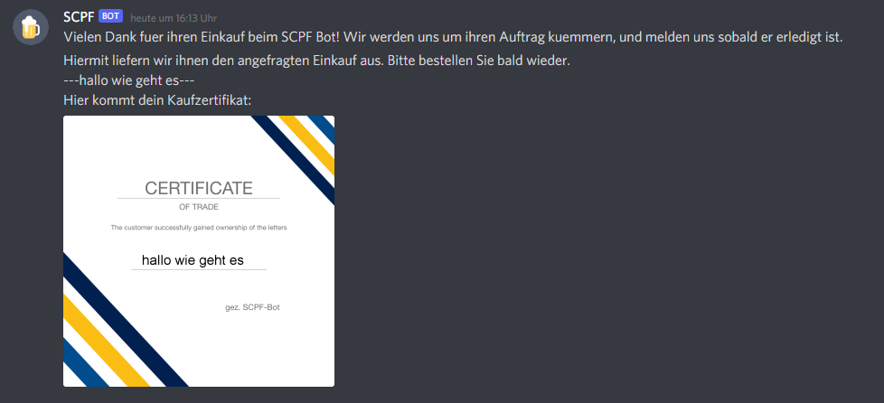

SCPF Discord-Bot

Die Aufgabe unseres Semesterprojekts im Modul "Software Engineering" bestand darin, einen
Discord-Bot namens "SCPF" zu entwickeln. Dieser sollte in der Lage sein, mit Kunden und
anderen Bots zu interagieren und verschiedene Strategien für das Kaufen von Buchstaben zu
implementieren. Kunden sollen dem Bot ein Wort nennen, dass sie gerne kaufen würden und
SCPF soll mit den Bots anderer Teams um Buchstaben verhandeln und auf Buchstaben in einer
öffentlichen Auktion bieten können, sodass das gewünschte Wort zusammengesetzt werden kann.
Dabei sollten Prioritätsstufen für Buchstaben festgelegt, ein automatischer Kaufvorgang
eingeführt und der Bot mit einer individuellen Persönlichkeit ausgestattet werden. Zusätzlich
sollte der Käufer nach einem erfolgreichen Geschäft ein spezielles Kauf-Zertifikat erhalten.
Unsere Gruppe setzte die Projektidee um, indem sie zunächst verschiedene Teilprobleme identifizierte und Lösungen dafür erarbeitete. Hierzu gehörten Aspekte wie das Speichern von unterschiedlichen Arten von Daten, die Interaktion mit verschiedenen Akteursgruppen über den Chat und die Ausgabe von aktuellen Statusinformationen im Chat. Die Implementierung erfolgte gemäß den Grundanforderungen und einem vorherigen Feinentwurf.
Besonders herausragend an unserem Bot ist die Fähigkeit, individuelle Kauf-Zertifikate auszustellen. Nach einer erfolgreichen Transaktion erhält der Käufer ein personalisiertes Zertifikat, das wichtige Informationen wie das erworbene Wort, den Namen und weitere Kaufdetails enthält. Diese Funktion verleiht dem Bot eine besondere Note und bietet den Nutzern eine einzigartige Erfahrung.
Insgesamt war die Entwicklung des SCPF-Bots nicht nur eine technische Herausforderung, sondern ermöglichte auch die Integration von kreativen und innovativen Features, wie dem persönlichen Zertifikat, um das Benutzererlebnis zu bereichern.
Leider existiert das Repository mit dem Quellcode des SCPF-Bots nicht mehr. Jedoch haben wir eine detaillierte PDF-Dokumentation erstellt, die alle relevanten Informationen zum Projekt, seiner Umsetzung und den besonderen Features des Bots enthält. Diese Dokumentation kann für weitergehende Einblicke und Details eingesehen werden. Wir hoffen, dass die PDF-Dokumentation dennoch einen umfassenden Überblick über das Projekt bietet.